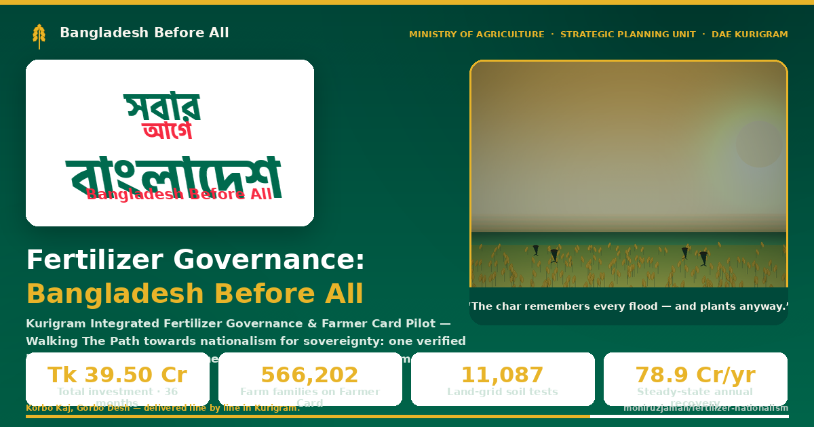
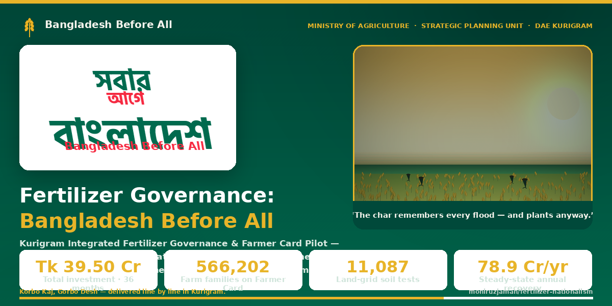
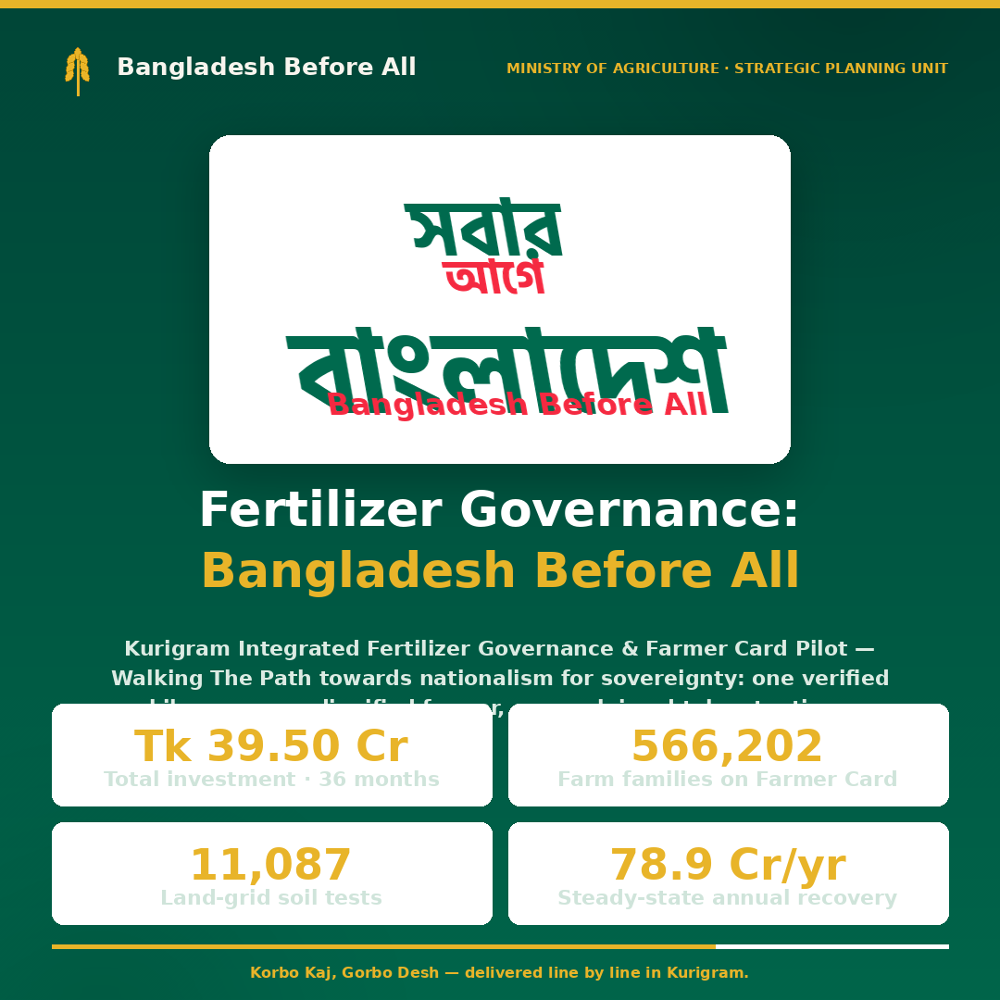
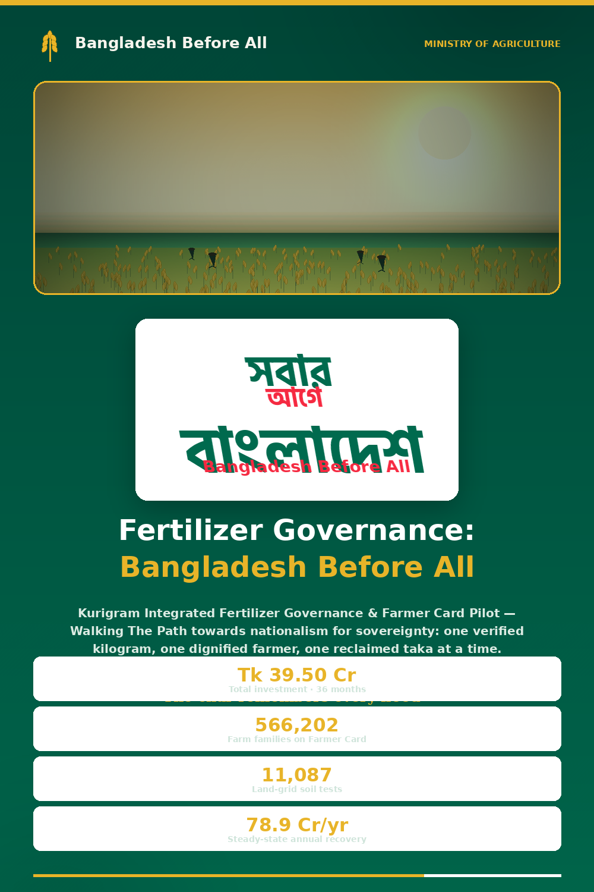
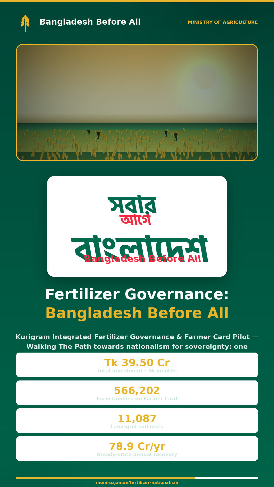

Kurigram Integrated Fertilizer Governance & Farmer Card Pilot · Tk 39.50 Cr · 36 months
সবার আগে বাংলাদেশ

Used by: Facebook · Messenger · WhatsApp · LinkedIn · iMessage · Telegram · Reddit · Slack · Discord · Skype
The canonical link-preview image. Referenced by og:image meta tags in index.html.

Used by: Twitter / X · Tumblr · some email clients
Referenced by twitter:image with twitter:card = summary_large_image.

Used by: Instagram feed · Threads · WhatsApp status · Facebook feed (square crop)
1:1 square format for feed posts; also serves as the apple-touch-icon fallback.

Used by: Pinterest · Tumblr (tall) · LinkedIn article hero
2:3 portrait ratio, Pinterest's optimal pin aspect.

Used by: Instagram Stories · Facebook Stories · WhatsApp Status · TikTok · YouTube Shorts cover
9:16 full-screen vertical for stories and short-form video covers.